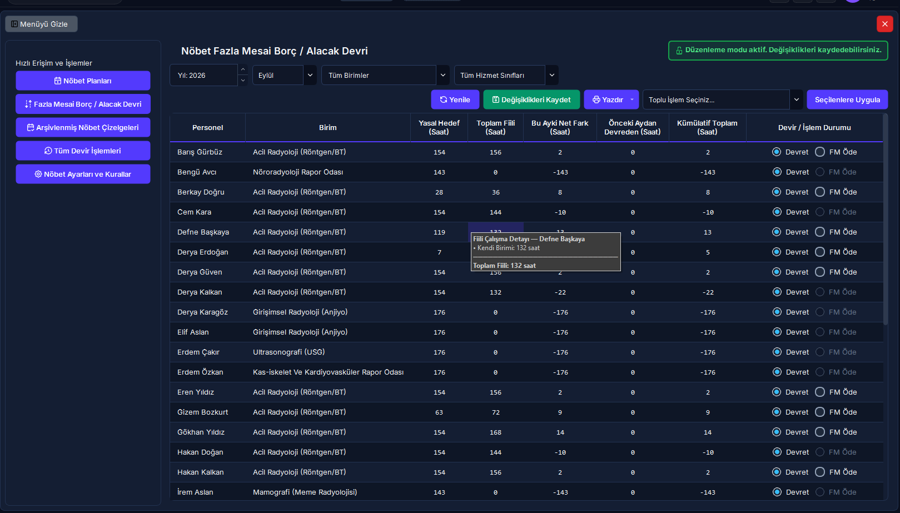
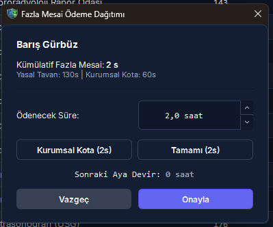

Nöbet Borç / Alacak ve Fazla Mesai Yönetimi
Bu modül; radyoloji ve sağlık çalışanlarının aylık yasal mesai rejimlerine (3153 Sayılı Kanun kapsamındaki haftalık 35 saatlik radyasyon ortamı veya 657 Sayılı Kanun kapsamındaki 40 saatlik genel klinik ortam), resmi tatil/arife indirimlerine ve onaylı izinlerine göre bireysel aylık hedef çalışma saatlerini belirler. Personelin tuttuğu fiili nöbetleri, resmi bayram mesailerini ve geçmiş aydan devreden saat bakiyelerini hesaba katarak mutemetlik ödemesi ve dönem devirlerini yönetir.
Vizyonder Hızlı Karar Reçetesi (Amir & Mutemet Özeti)
Ay başında personelin mesai rejimi (35s Radyasyon vs 40s Genel) ve onaylı izin günlerinin hedef saatten otomatik düşürüldüğünü kontrol edin.
Fiili çalışma hedefi aştığında yeşil alacak, eksik kaldığında kırmızı borç bakiyesi oluşur. Geçmiş aydan devreden saatler kümülatif bakiyeye otomatik eklenir.
60 saatlik koruyucu kota ve 130 saatlik mutlak tavan denetimiyle bordro icmalini üretin. FM Öde işlemi dönemi kilitler ve yetkisiz değişiklikleri engeller.
Temel Eşikler & Koruyucu Yasal Sınırlar
Mevzuat gereği bir personele bir ayda ödenebilecek mutlak üst sınırdır. 130 saati aşan kısımlar sonraki aya zorunlu devreder.
Personel sağlığını korumak ve mesleki tükenmişliği (burnout) engellemek adına kurumun belirlediği standart ödeme kotasıdır.
Radyasyonlu alan (haftalık 35 saat) ile genel alan (haftalık 40 saat) nöbetleri oransal denklikle birleştirilip kıstelyevm uygulanır.
Dini ve milli bayramlar ile arife günleri saat 13:00 sonrasında tutulan nöbetler dakika hassasiyetinde ayrı bordro sütununa yazılır.
Bakiye Hesaplama ve Karar Mantık Akışı
4. 5N1K Kural ve Arayüz Bileşen Envanteri
Ekran Konumları ve Görsel Rehber


Adım Adım İşlem Rehberi
Aylık Nöbet Borç / Alacak Tablosunu İnceleme
- Sol menüden [Nöbet Yönetimi] > [Nöbet Borç / Alacak Devri] sayfasına gidin.
- Üst araç çubuğundaki [Yıl] ve [Ay] alanlarından hesaplanacak nöbet dönemini seçin.
- Gerekiyorsa [Birim] ve [Hizmet Sınıfı] filtrelerini daraltın ve [Yenile] butonuna basın.
- Devir mantığı: Fazla mesai bakiyesi iki ay gecikmeli devreder: Ocak dönemi Mart, Şubat dönemi Nisan planına yansır. Nöbet çizelgesi ayın bitmesine 5-10 gün kala hazırlandığı için devredecek ayın mutabakatı o sırada kesinleşmiş olur. Yeni bir ayın otomatik planını oluşturmadan önce, iki ay öncesinin mutabakatını bu ekranda hesaplayıp [Değişiklikleri Kaydet] ile kaydetmeniz gerekir.
- Tabloda personellerin yasal hedef saatleri, fiili saatleri, ayın net farkı, iki ay önceki dönemden devreden bakiye ve kümülatif toplam saatleri listelenir:
- Artı Kümülatif Saatler: Yeşil renkle gösterilir; personelin fazla mesai hak edişi olduğunu belirtir.
- Eksi Kümülatif Saatler: Kırmızı renkle gösterilir; personelin çalışma saati borcu olduğunu ve sonraki aya devredeceğini gösterir.
- Zengin Tooltip: Fiili saat hücresinin üzerine geldiğinizde personelin kendi biriminde, diğer birimlerde, resmi bayramlarda ve 35s/40s hibrit oranlarında tuttuğu süreler detaylı olarak izah edilir.
Bireysel Fazla Mesai Ödeme Dağıtımı (FMOdemeSecimDialog)
- Artı bakiyesi olan personelin satırındaki [FM Öde] radio butonuna tıklayın.
- Açılan Fazla Mesai Ödeme Dağıtımı penceresinde:
- Personelin kümülatif fazla mesaisi, yasal mutlak tavan (130s) ve kurumsal koruyucu kota (60s) gösterilir.
- Personelin tükenmişliğini önlemek ve sağlığını korumak için [Kurumsal Kota (60s)] butonuna basabilir,
- Mevzuatın izin verdiği tüm hak edişi ödemek için [Tamamı (Maks 130s)] butonuna basabilir,
- Veya [Ödenecek Süre] kutusuna dilediğiniz özel saat miktarını girebilirsiniz.
- Pencerenin altındaki [Sonraki Aya Devir] etiketi anlık olarak farkı hesaplar ve renklendirir.
- [Onayla] butonuna basarak dağıtımı tamamlayın.
- İşlemler tamamlandığında sağ üstteki [Değişiklikleri Kaydet] butonuna basarak kararları veritabanına kaydedin.
Toplu Kota veya Devir Uygulama
- Tablodan işlem yapmak istediğiniz personellerin satırlarını seçin (Ctrl veya Shift tuşuyla birden fazla satırı işaretleyin).
- Üst araç çubuğundaki [Toplu İşlem Seçiniz...] kutusundan kuralı belirleyin:
- Kurumsal Kota Öde (60s, Kalanı Devret): Tükenmişlik önleme sınırını uygular; ilk 60 saati öder, kalanı sonraki aya devreder.
- Tamamını Öde (Maks 130s): Yasal 130 saat sınırına kadar olan tüm süreyi ödemeye ayırır.
- Tamamını Sonraki Aya Devret: Ödeme yapmaz, kümülatif saatin tamamını sonraki aya devreder.
- [Seçilenlere Uygula] butonuna tıklayın.
- Güncellenen satırları gözden geçirip [Değişiklikleri Kaydet] butonuna basın.
Kesinleşmiş Dönem Kilidini Açma (Sudo Doğrulaması)
- Ödemeleri kaydedilmiş bir dönem incelenirken sağ üstte kırmızı kilit rozeti ve [Kilidi Aç] butonu görüntülenir.
- [Kilidi Aç] butonuna tıklayın.
- Açılan Yönetici Şifre Doğrulama (Sudo) penceresine şifrenizi girip onaylayın.
- Sistem geçici düzenleme moduna geçer; durum rozeti sarıya döner ve kilitli form elemanları aktifleşir.
- Gerekli düzeltmeleri yaptıktan sonra tekrar [Değişiklikleri Kaydet] butonuna basarak yeni kararları onaylayın.
Resmi Mutemetlik Fazla Mesai Bildirim Cetveli Alma
- Ödeme kararları kaydedildikten sonra [Yazdır] butonuna tıklayın.
- Açılan menüden dilediğiniz aktarım formatını seçin:
- Yazıcıdan Yazdır: T.C. Kimlik No, Personel Adı Soyadı, Görev Yeri, Normal Fazla Mesai (Saat), Bayram Mesaisi (Saat) ve Hazırlayan / Onaylayan imza blokları içeren resmi cetveli doğrudan yazıcıya gönderir.
- Excel Olarak Dışa Aktar (.xlsx): Mutemetlik ve bordro birimlerine iletilmek üzere standart Excel tablosu oluşturur.
- PDF Olarak Dışa Aktar (.pdf): Arşivleme ve paraf için imzaya hazır PDF belgesi üretir.
Hibrit Platform Görünümü: Masaüstü vs Web Portalı
- Kıstelyevm ve tatil düşümlü yasal hedef saat hesaplama motoru.
- Bireysel FM dağıtım modalı (
FMOdemeSecimDialog). - Toplu kurumsal kota (60s), tam ödeme (130s) veya devir atama.
- Kesinleşmiş dönem kilidi ve
SudoDialogControlleryönetici şifre doğrulaması. - Yazıcıdan yazdırma, Excel (.xlsx) ve PDF (.pdf) bordro dökümü.
- Nöbet Paneli > Fazla Mesai Borç / Alacak (5a) sekmesi.
- Personelin hedef, fiili ve net bakiye saatlerini tarayıcıdan izleme.
- Onaylı izin günleri için "X Gün İzinli" rozeti ve hedef saat izahı.
- Pozitif bakiyeler yeşil, borçlu bakiyeler kırmızı durum rozetiyle sunulur.
- Yöneticiler için tek tıkla Excel ve PDF rapor indirme butonu (
DashboardExportButton).
Bordro, Mesai & Mit Avcısı (Kritik Kurallar)
"Personel ay içinde ne kadar nöbet tutarsa tutsun, biriken tüm saatler o ay nakit fazla mesai olarak ödenebilir."
657 Sayılı Kanun ve kurum mevzuatı uyarınca bir personelin bir ayda alabileceği yasal fazla mesai ödeme tavanı 130 saattir. 130 saatin üzerindeki hak edişler silinmez, sonraki aya zorunlu saat bakiyesi olarak devreder.
"Radyasyon alanında çalışan tüm sağlık personeli de haftalık 40 saat üzerinden mesaiye tabidir."
3153 Sayılı Kanun gereğince radyasyon görevlilerinin haftalık çalışma süresi 35 saattir (günlük 7 saat). RADPYS, personelin görev tipine göre hedef saati otomatik 35 saat üzerinden hesaplar.
"Mutemetliğe onay verilip dönem kilitlendikten sonra nöbet çizelgesinde yapılan değişiklikler bordroya otomatik yansır."
Mali audit izi gereğince FM Ödendi kararı verilmiş dönemler kesin kilitlenir. Çizelge değişikliği gerekiyorsa Sistem Yöneticisi Sudo şifresiyle kilidi kaldırmalı ve mutemetlik icmali yeniden üretilmelidir.
Sıkça Sorulan Sorular & Kritik Uyarılar
Personelin kümülatif fazla mesaisi 150 saat ise neden sistem en fazla 130 saat ödemeye izin veriyor?
657 Sayılı Devlet Memurları Kanunu ve ilgili sağlık mevzuatı uyarınca bir personelin bir ayda alabileceği yasal fazla mesai ödeme tavanı 130 saattir. Bu nedenle sistem 130 saatin üzerindeki kısmı otomatik olarak bir sonraki döneme devreder.
60 saatlik Kurumsal Kota personelin hakkını kısıtlar mı?
Hayır. 60 saatlik kota bir bütçe kısıtı değil, personelin fiziksel ve ruhsal sağlığını korumak, aşırı yıpranmayı sınırlandırmak ve mesleki tükenmişliği (burnout) engellemek amacıyla kurum tarafından konulmuş bir iş sağlığı sınırıdır. 60 saatin üzerindeki saatler silinmez; sonraki aya bakiye olarak devredilerek personelin izin veya denkleştirme olarak dinlenmesi teşvik edilir.
Eksik mesaisi (borcu) olan personele ödeme yapılabilir mi?
Hayır. Kümülatif bakiyesi eksi veya sıfır olan personellerde [FM Öde] seçeneği sistem tarafından otomatik kilitlenir. Bu personeller için tek geçerli işlem borcun bir sonraki aya devredilmesidir (SonrakiAyaEklendi).
Kaydedilmiş bir dönem neden kilitlenir ve kim açabilir?
Mutemetliğe bildirilen bordro saatlerinin sonradan yetkisiz şekilde değiştirilmesini önlemek amacıyla, FM Ödendi kararı verildiğinde dönem kilitlenir. Kilit yalnızca idari amir veya Sistem Yöneticisi tarafından Sudo Yönetici Şifresi girilerek geçici olarak açılabilir.